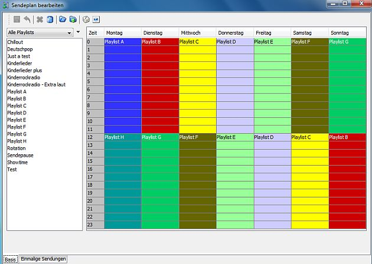

Übersicht
Das Fenster zum Bearbeiten des Sendeplans kannst Du auf zwei Wegen öffnen:
Unter dem -Tab kannst Du den eigentlichen Sendeplan bearbeiten wo Du festlegst was normalerweise an welchem Wochentag zu welcher Zeit läft. Unter dem Tab kannst Du Sendungen für die einmalige Ausstrahlung konfigurieren.
Sendungen einfügen oder entfernen
In der Liste links siehst Du die verfügbaren Playlists. Wenn Du Tags für Playlists vergeben hast kannst Du diese auch auf ein Tag einschränken. Es gibt zwei Möglichkeiten eine Sendung in den Sendeplan einzufügen:
Eine Sendung läuft jeweils bis zum Start der nächsten Sendung, maximal aber bis zum Ende des Tages. Fügst Du also z. B. in einen leeren Sendeplan am Montag um 0 Uhr eine Sendung ein wird die bis zum Ende des Tages angezeigt. Fügst Du eine weitere Sendung um 2 Uhr ein endet die erste Sendung um 2 und die neue läuft bis zum Tagesende usw. So kannst Du nach und nach den Sendeplan füllen.
Zu Zeiten die nicht mit einer Sendung belegt sind - das sind die grauen, leeren Felder - läuft die Basisplaylist.
Um eine Sendung zu löschen markierst Du in der Tabelle den Zeitpunkt an dem die Sendung beginnt und drückst die Entfernen-Taste oder klickst auf . Die Zeit im Sendeplan wird dann automatisch mit der - nun länger dauernden - vorhergehenden Sendung gefüllt.
Zum Speichern des Sendeplans klickst Du auf . Um zum zuletzt gespeicherten Zustand zurückzukehren klickst Du auf .
Wenn nichts mehr geht...
Du kannst jederzeit wieder mit einem komplett leeren Sendeplan anfangen in dem Du auf klickst. Das kann manchmal sinnvoll sein wenn sich der Sendeplan bei laut.fm nicht mehr so verhält wie er soll.Backup
Du kannst den Sendeplan durch Klick auf  in eine Datei speichern und jederzeit durch Klick auf
in eine Datei speichern und jederzeit durch Klick auf  wieder importieren.
wieder importieren.